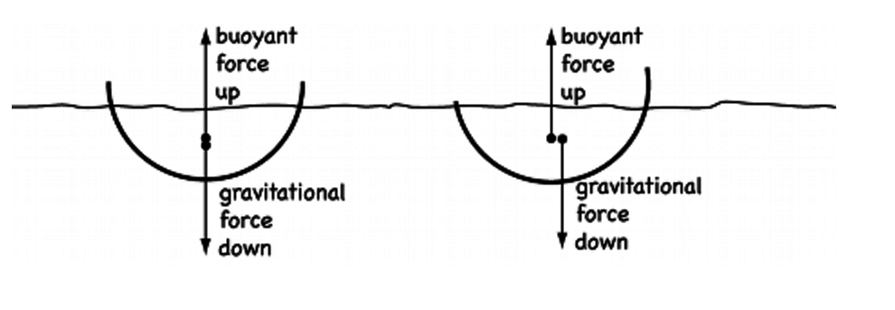
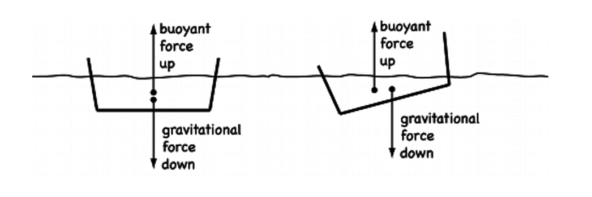

### Week 1: Introduction
Shop training and general introduction: Meet in Science Center 102. Interact with a parametric model of a canoe where dimensions and proportions can be modified. Discuss the effects that geometry plays on steering, stability, and speed. Walk to 38 Oxford (Cambridge Electron Accelerator) for a tour of where we will be meeting for the rest of the semester.
#### Team speed docs
This week we met at the Science Center and talked about stability. We discussed the merits of different hull sizes and shapes and how secondary stability works. Through interactive demos we found that a flat hulled boat could hold more weight and retain its stability better than a round bottomed boat.
Assignment: Complete the Machine Shop and Makerspace Safety course from the Harvard Training Portal. Reading: The Survival of the Bark Canoe, pp. 1-50. Stability in Flotation | Harvard Natural Sciences Lecture Demonstrations. Review the Quick-Canoe Build Plans.


<img src="./0.jpg" alt="" width="70%">